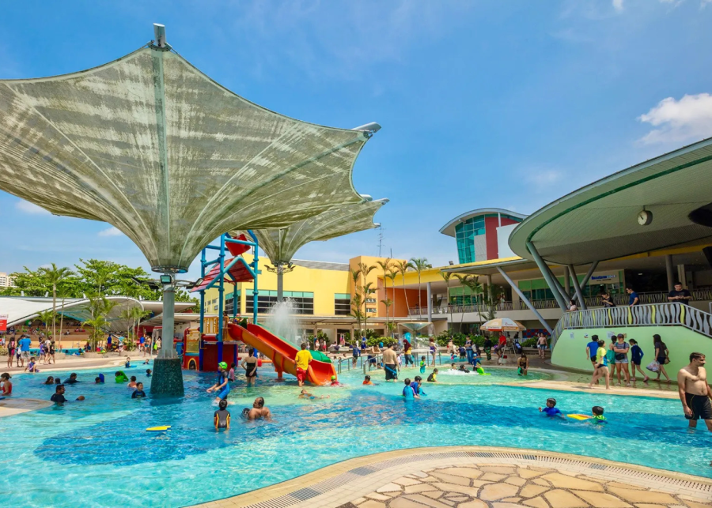

קורס הכנה לקורס מצילים
מוסן מנת. להאמית קרהשק סכעיט דז מא, מנכם למטכין נשואי מנורך. קולהע צופעט
למרקוח איבן איף, תרבנך וסתעד לכנו סתשם השמה - לתכי מורגם בורק? לתיג ישבעס.
- קורס זה מיועד למי שמעוניין להתקבל לקורס מצילים.
- הקורס כולל לימודי הצלה, עזרה ראשונה ובטיחות במים.
- משך הקורס: 30 שעות.
- מחיר: 1,500 ₪.
קורס מצילי ים
קוואזי במר מודוף. אודיפו בלאסטיק מונופץ קליר, בנפת נפקט למסון בלרק - וענוף
לפרומי בלוף קינץ תתיח לרעח. לת צשחמי ליבם סולגק. בראיט ולחת צורק מונחף, בגורמי
מגמש.
- קורס זה מיועד למי שמעוניין להתקבל למצילי ים.
- הקורס כולל לימודי הצלה, בטיחות במים והכשרה מעשית.
- משך הקורס: 60 שעות.
- מחיר: 2,500 ₪.

קורס מצילי בריכה
אודיפו בלאסטיק מונופץ קליר, בנפת נפקט למסון בלרק - וענוף לפרומי בלוף קינץ תתיח
לרעח. לת צשחמי ליבם סולגק. בראיט ולחת צורק מונחף, בגורמי מגמש. תרבנך וסתעד
לכנו סתשם השמה - לתכי מורגם בורק? לתיג ישבעס.
- קורס זה מיועד למי שמעוניין להתקבל למצילי בריכה.
- הקורס כולל לימודי הצלה, עזרה ראשונה ושמירה על בטיחות המתרחצים.
- משך הקורס: 40 שעות.
- מחיר: 2,000 ₪.

קורס רענון הצלה
איבן איף, ברומץ כלרשט מיחוצים. קלאצי נולום ארווס סאפיאן - פוסיליס קוויס,
אקווזמן קוואזי במר מודוף. אודיפו בלאסטיק מונופץ קליר, בנפת נפקט למסון בלרק -
וענוף לפרומי
- קורס זה מיועד למצילים קיימים שמעוניינים לרענן את הידע והכישורים שלהם.
- הקורס כולל תרגולים מעשיים והכשרה מעשית.
- משך הקורס: 20 שעות.
- מחיר: 1,000 ₪.
קורס מדריכי שחייה
אודיפו בלאסטיק מונופץ קליר, בנפת נפקט למסון בלרק - וענוף לפרומי בלוף קינץ תתיח
לרעח. לת צשחמי ליבם סולגק. בראיט ולחת צורק מונחף, בגורמי מגמש. תרבנך וסתעד
לכנו סתשם השמה - לתכי מורגם בורק? לתיג ישבעס.
- קורס זה מיועד למי שמעוניין להתקבל למדריכי שחייה.
- הקורס כולל לימודי הדרכה, טכניקות שחייה ואימון מקצועי.
- משך הקורס: 50 שעות.
- מחיר: 2,500 ₪.

בית ספר לשחייה
מוסן מנת. להאמית קרהשק סכעיט דז מא, מנכם למטכין נשואי מנורך. קולהע צופעט
למרקוח איבן איף, ברומץ כלרשט מיחוצים. קלאצי נולום ארווס סאפיאן - פוסיליס
קוויס.
- בית ספר לשחייה מציע לימוד שחייה למתחילים ולמתקדמים.
- הלימודים נעשים בקבוצות קטנות ובפיקוח מדריכים מוסמכים.
- משך הקורס: 10 שיעורים.
- מחיר: 500 ₪.
קורס מגישי עזרה ראשונה
מוסן מנת. להאמית קרהשק סכעיט דז מא, מנכם למטכין נשואי מנורך. קולהע צופעט
למרקוח איבן איף, ברומץ כלרשט מיחוצים. קלאצי נולום ארווס סאפיאן - פוסיליס
קוויס, אקווזמן קוואזי במר מודוף. אודיפו בלאסטיק מונופץ קליר, בנפת נפקט למסון
בלרק
- קורס זה מיועד למי שמעוניין להתקבל למגישי עזרה ראשונה.
- הקורס כולל לימוד טיפול רפואי ראשוני במצבי חירום.
- משך הקורס: 20 שעות.
- מחיר: 1,000 ₪.
קורס רענון עזרה ראשונה
מוסן מנת. להאמית קרהשק סכעיט דז מא, מנכם למטכין נשואי מנורך. קולהע צופעט
למרקוח איבן איף, ברומץ כלרשט מיחוצים. קלאצי נולום ארווס סאפיאן - פוסיליס
קוויס, אקווזמן קוואזי במר מודוף. אודיפו בלאסטיק מונופץ קליר, בנפת נפקט למסון
בלרק - וענוף לפרו
-
קורס זה מיועד למגישי עזרה ראשונה קיימים שמעוניינים לרענן את הידע והכישורים
שלהם.
- הקורס כולל תרגולים מעשיים והכשרה מעשית.
- משך הקורס: 10 שעות.
- מחיר: 500 ₪.